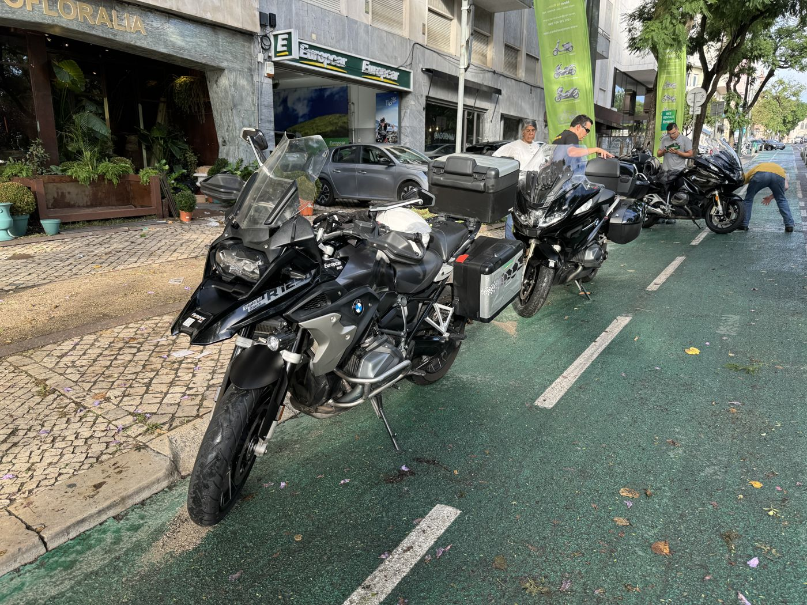
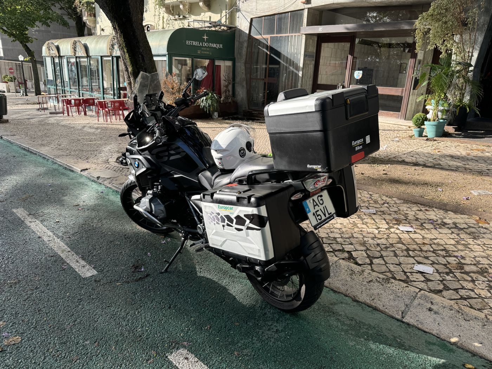
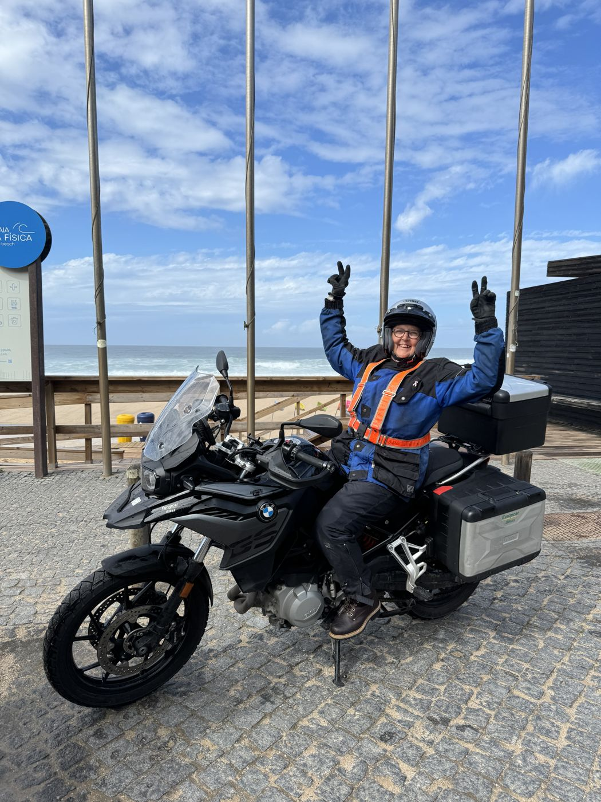
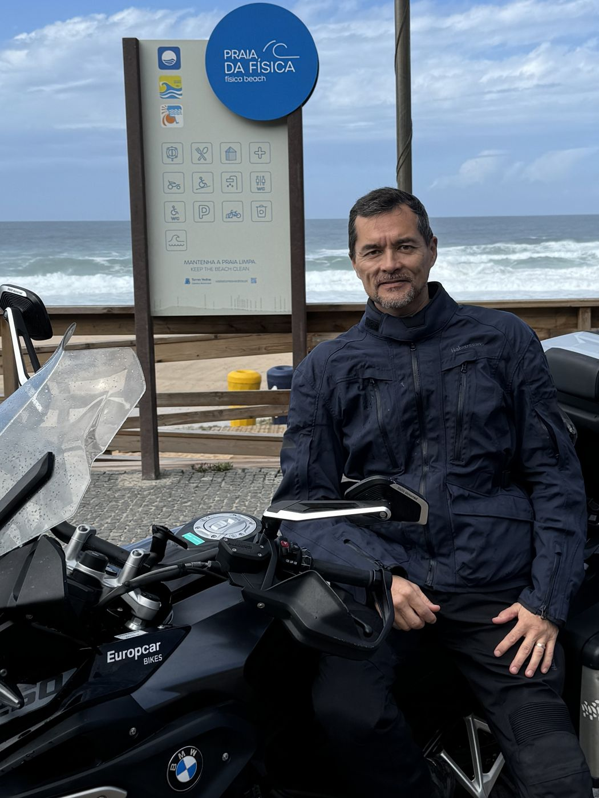
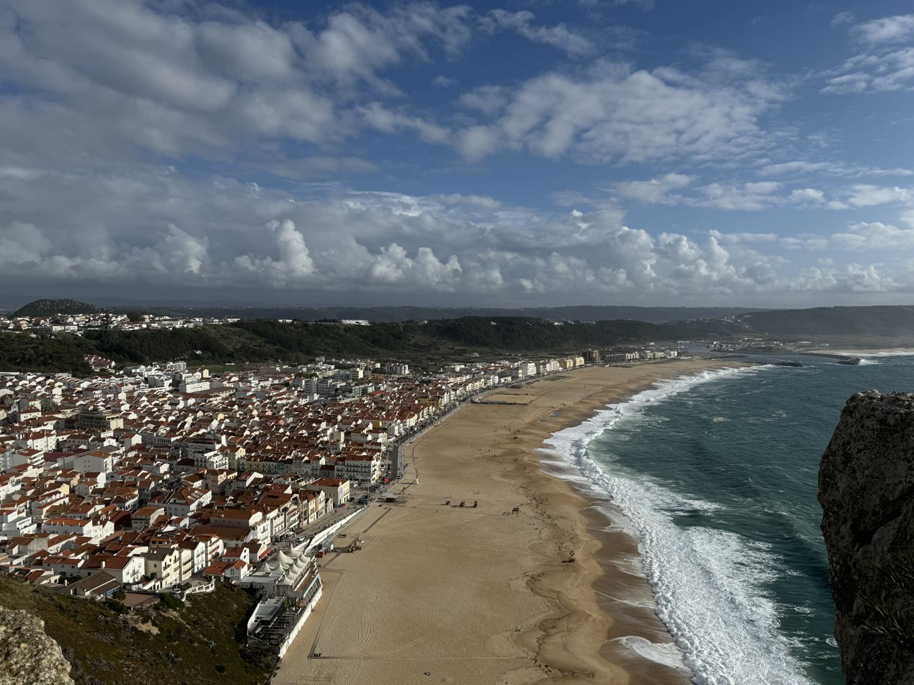
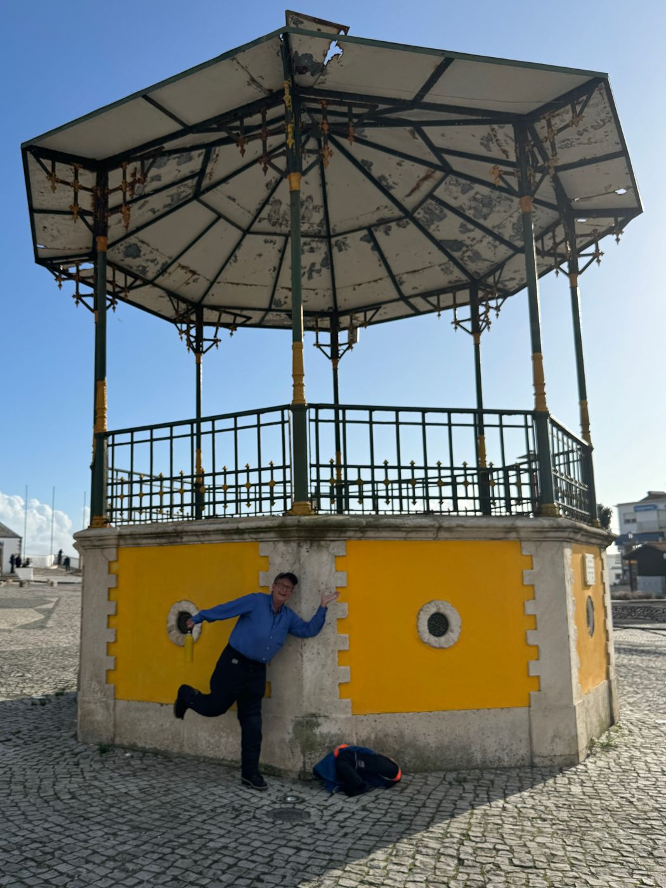
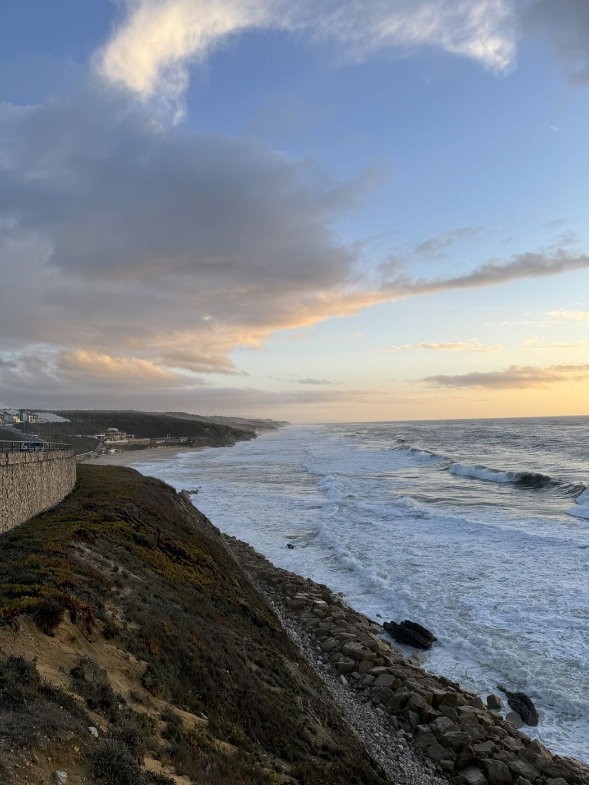
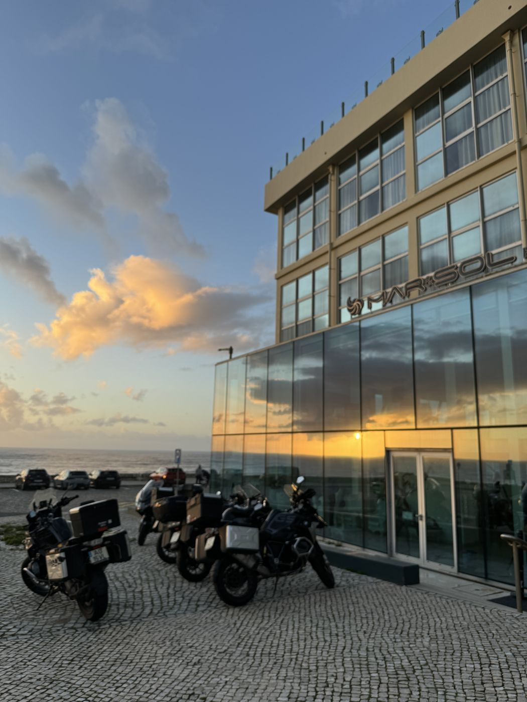
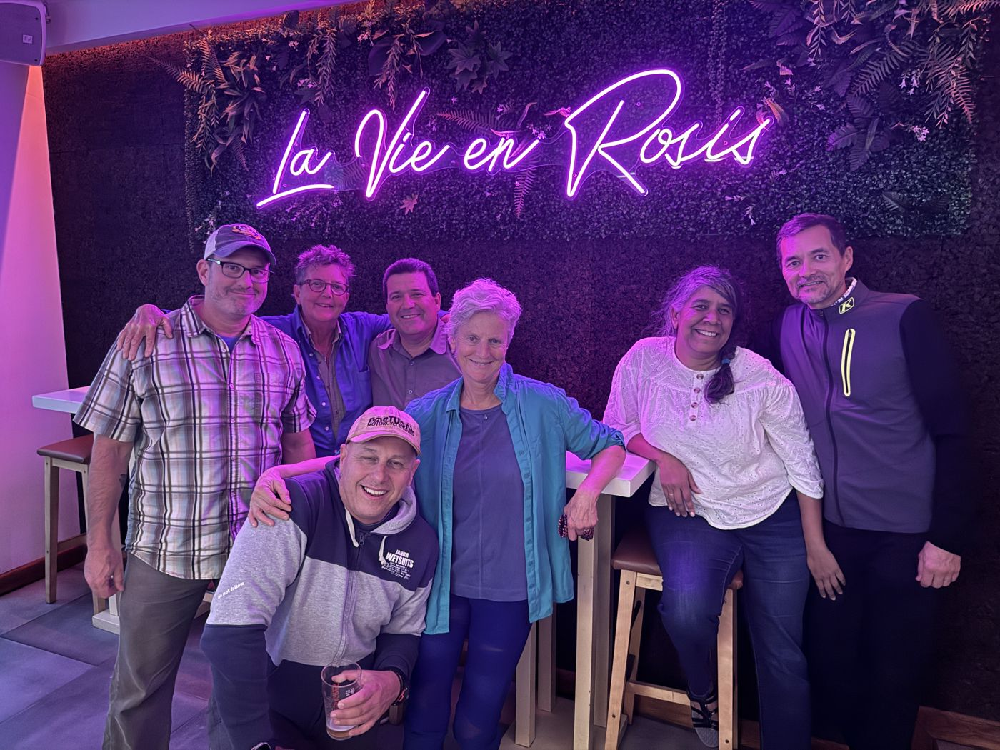

Day 1 · Mon, Oct 7
Lisbon up the Atlantic coast
Out of Lisbon and onto the back roads of the west coast: fishing and surfing villages, orchards, and the ocean alongside most of the way north to Nazaré and São Pedro de Moel.
By way of
- Lisbon
- Praia da Física
- Nazaré
- São Pedro de Moel








